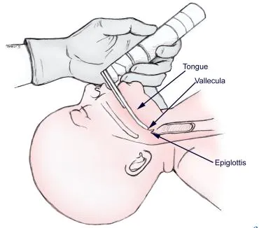

Resuscitation#
Executive summary
Outcome: Resuscitation (e.g. mechanical ventilation, CPR, adrenaline)
Specific to HIE?
No - although hypoxia and treatment with therapeutic hypothermia both increase the risk of needing treatment - there are many other reasons that respiratory failure occurs, such as newborn respiratory distress syndrome which usually affects premature babies
Which infants with HIE?
Those with most breathing difficulties/respiratory distress - but not all infants with HIE will require it. Estimates vary, but studies of infants receiving therapeutic hypothermia have estimated that apx. 50 to 80% of those infants require mechnical ventilation
Any other benefits or caveats not already mentioned?
NA
Conclusion: Potentially recommended. Resuscitation (e.g. mechanical ventilation, CPR, adrenaline) is often required in infants with HIE and infants who receive therapeutic hypothermia. However, not all infants need it, and not all infants who need it will have HIE, so should not use alone as an indicator. You might focus on a particular type of resuscitation - e.g. mechanical ventilation. Intubation may also be used as part of resuscitation (but no longer an indicator for meconium at delivery, as newborns are no longer intubated for this)
What is neonatal resuscitation?#
Resuscitation of newborns covers a range of supports/procedures used if a newborn is judged to require it (e.g. not breathing/crying, poor muscle tone, evidence of meconium/infection, or pre-term). It encapsulates:
Initial steps in stabilisation (provide warmth, position, clear airway, dry, stimulate, re-position)
Mechanical ventilation
Chest compressions
Admnistration of adrenaline and/or volume expansion [Chadha 2010]
‘Care in the first ten minutes of life is focussed around aeration of the lung and any problem in effectively opening and maintaining the airway is immediately problematic. Similarly, the mode of arrest in the older neonate is usually respiratory and so managing the airway is key’. ‘Fortunately intrauterine preparation for birth (at full term) offers significant physiological adaptation to sustained hypoxia, offering potential for some resilience in the circumstance of a difficult airway problem. Unwell babies at delivery may however have less physiological reserve, particularly if they lack innate respiratory effort.’[BAPM Framework]
In terms of the proportions of neonates requiring assistance:
No assistance: ‘Most infants adapt well to extra-uterine life but some require help with stabilisation, or resuscitation. Up to 85% breathe spontaneously without intervention’.
Some degree of resuscitation/assistance: About 10% (or 5-10%) of infants respond after drying, stimulation and airway opening manoeuvres
Basic resucitation: About 5% (or 3 to 6%) require basic resuscitation which incorporate assisted ventilation i.e. mechanical ventilation like positive pressure ventilation. Intubation rates vary between 0.4 and 2%.
Advanced resuscitation: Less than 1% require advanced resuscitation - and this is around 2% of babies who do not breathe at birth. Advanced resuscitation can involve chest compression, intubation or medications. Fewer than 0.3% of infants receive chest compressions and only 0.05% receive adrenaline.
Based on these sources: [BAPM Framework], [Wall et al. 2009], [source].
More about: Mechanical ventilation#
Mechnical ventilation is used for neonates with respiratory failure. It aims to oxygenate the baby and to remove carbon dioxide. It carries risk of injury to the lungs, brain and other systems.[source] ‘The basic goal of mechanical ventilation is to restore lung function while limiting ventilator-induced lung injury, which is considered an important risk factor in the development of bronchopulmonary dysplasia (BPD).’[source]
‘Most infants adapt well to extra-uterine life but some require help with stabilisation, or resuscitation. Up to 85% breathe spontaneously without intervention; a further 10% respond after drying, stimulation and airway opening manoeuvres; approximately 5% receive positive pressure ventilation. Intubation rates vary between 0.4 and 2%. Fewer than 0.3% of infants receive chest compressions and only 0.05% receive adrenaline.’[source]
There are several different methods for mechanical ventilation, with new modalities introduce over the last decades, aiming to provide lung protective ventilation strategies. The range of methods for ventilation include:
Pressure targeted ventilation (PTV)
Volume targeted ventilation (VTV)
Proportional assist ventilation (PAV)
Neurally adjusted ventilatory assist (NAVA)
Airwary pressure release ventilation (APRV)
Mandatory minute ventilation (MMV)
Variable ventilation (VV) [source]
Example of diagram for NAVA from van Kaam et al. 2021 [source]

More about: intubation#
Intubation, also known as tracheal or endotracheal intubation is the insertion of a breathing tube into the trachea.[Royal Blank Teaching Hospitals Critical Care Unit Information] Endotracheal suctioning is a common procedure on intubated infants ‘to clear secretions and maintain the airway patency’.[Royal Children’s Hospital Melbourne Nursing Guidelines]
Image from [source]:

Intubation during resuscitation#
‘Although intubation is an important method of establishing an airway, simpler methods including a correctly applied face mask or laryngeal mask airway. These are sufficient in the majority of infants requiring resuscitation and certainly until senior help arrives in those needing prolonged ventilation.’[Scottish Clinical Guidelines]
We understand that now intubation and suctioning is only used if you are actively resuscitating and unable to move the chest.
Intubation for MSAF#
In the 1980s and 1990s, ‘all infants born through MSAF (both vigorous and non-vigorous) were routinely intubated after delivery’, and intervention decisions were ‘based on the consistency and thickness of the meconium’.
In 2000, the fourth edition of the Neonatal Resuscitation programme (NRP) guidelines stopped recommending intubation ‘for vigorous infants born through MSAF’.
In 2016, the seventh edition of the NRP guidelines stopped recommending ‘routine intubation and tracheal suctioning for non-vigorous infants born through MSAF’. This was on the basis of a lack of evidence to support intubation and tracheal suctioning, ‘in the context of avoiding the potential harm of intubation and the subsequent delay in initiating the initial steps of neonatal resuscitation’.[Gupta and Chong Lee 2020]
How is this linked to HIE?#
Both hypoxia and treatment with therapeutic hypothermia can impact on respiratory functions.
Perinatal hypoxia is often associated with elevated pulmonary vascular resistance or meconium aspiration syndrome (MAS). In addition, HI injury is typically followed by cerebral reperfusion and excessive oxidative stress.[source]’Frequently observed symptoms in asphyxiated newborns, such as delayed initiation of spontaneous breathing, respiratory depression, pulmonary hypertension, and seizures often necessitate mechanical ventilation’. Newborns with more severe asphyxia are more likely to need mechnical ventilation.[source]
Hypothermia causes a decrease in metabolic rate with a parallel reduction in oxygen (O2) consumption and carbon dioxide (CO2) production [source]
Needing mechanical ventilation and/or ongoing resuscitation is part of the criteria used for therapeutic hypothermia.[Mosalli 2012]
Statistics#
Proportion of infants with HIE who receive mechanical ventilation, these are all from during therapeutic hypothermia treatment:
In a study of cohorts of babies receiving therapeutic hypothermia, 73.4 to 83.1% had received mechanical ventilation on day of admission.[Gale et al. 2021]
‘Approximately 50–70% of asphyxiated infants without pulmonary disease have been reported to require mechanical ventilation during therapeutic hypothermia due to the poor respiratory drive, altered level of consciousness, or seizure burden secondary to encephalopathy’
‘Data from the Vermont Oxford Network Neonatal Encephalopathy Registry 2006–2010 showed that 64% of eligible infants received mechanical ventilation’
‘While in some centers all infants are intubated and sedated through the course of hypothermia, centers that expanded their cooling protocol to include mild encephalopathy have reported only 30% of babies receiving hypothermia needed mechanical ventilation’[Szakmar et al. 2019]
Other reasons for resuscitation#
There are many reasons for ventilation, but something that commonly comes up is newborn respiratory distress syndrome (NRDS). This is ‘when a baby’s lungs are not fully developed and cannot provide enough oxygen, causing breathing difficulties. It usually affects premature babies.’ ‘Around half of all babies born between 28 and 32 weeks of pregnancy develop NRDS. In recent years the number of premature babies born with NRDS has been reduced with the use of steroid injections, which can be given to mothers during premature labour.’ Regarding treatment after birth, this may just be extra oxygen for mild symptoms via an incubator (small mask over nose/face or tubes into nose), but if symptoms are more severe, this can be mechnical ventilation which supports or takes over their breathing.[source]
Other considerations#
Anecdotally Harriet found there wasn’t much variation between true sites in mechanical ventilation, implying it’s a true marker of a sick baby rather than something that varies alot with clinician practice.
Appendices - terminology#
Some terms related to asphyxia, death and resuscitation have been used interchangeably previous. Currently the terminology is:
Perinatal asphyxia - insufficient oxygen (before, during or after birth)
Neonatal encephalopathy - brain damage in neonates
Intrapartum fetal death - death of fetus during labour (formerly called birth asphyxia)